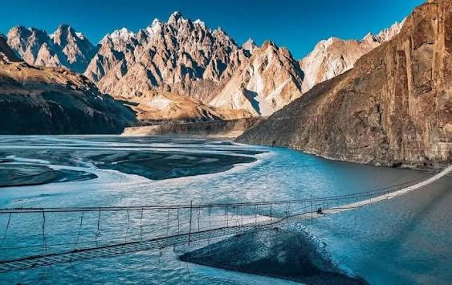
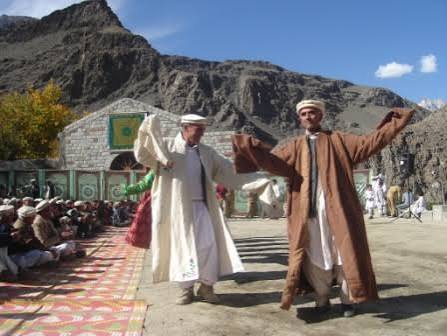
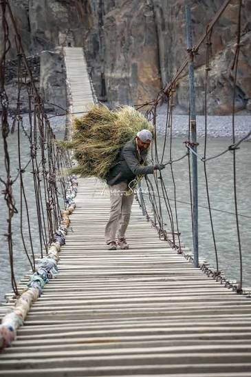
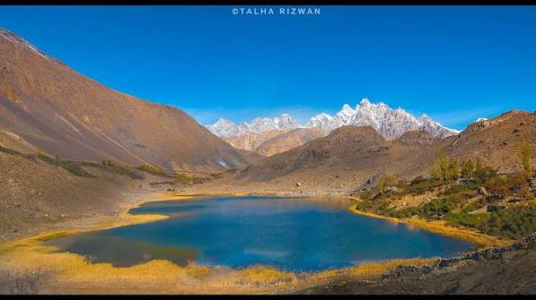
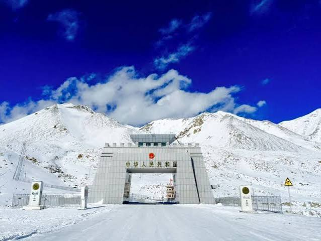
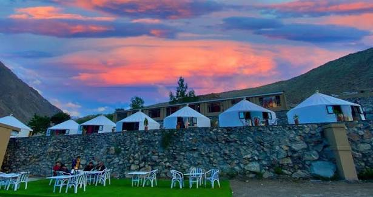
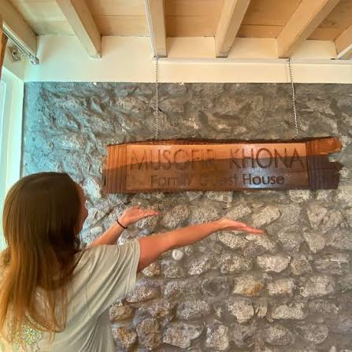
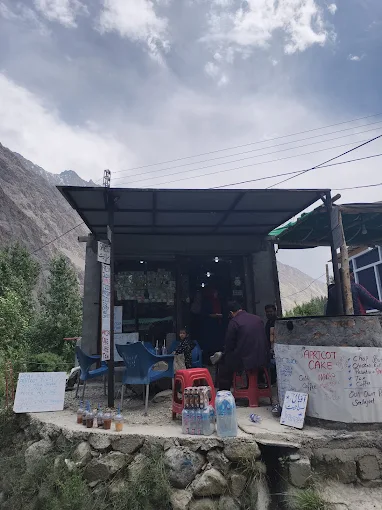
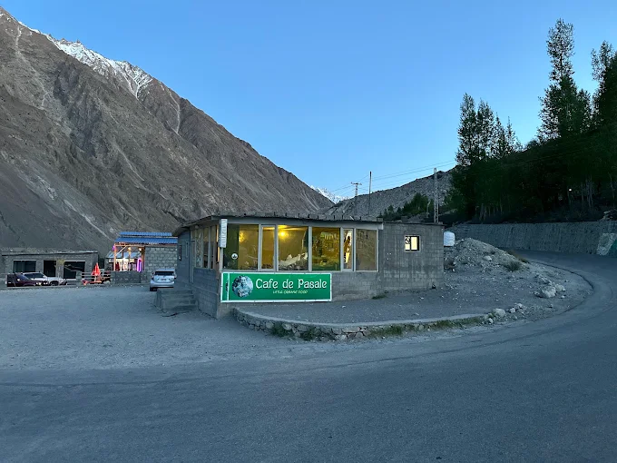
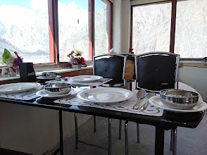

Cross the Bridge
Feel the rush of the famous rope-and-plank crossing.
Learn more →Hunza Valley · Gilgit-Baltistan
Experience one of the world's most thrilling suspension bridges surrounded by the breathtaking Karakoram Mountains.

A bridge between worlds
Suspended above the turquoise waters of the Hunza River, Hussaini Bridge is a handmade marvel of rope, wood, and sheer nerve. Its generous gaps and swaying cables have made it a global symbol of Himalayan adventure.
Located in the welcoming village of Hussaini near Passu, the crossing connects centuries of Wakhi culture with a landscape shaped by glaciers, peaks, and ancient trade routes.
Through the lens
From golden valley mornings to dramatic high-mountain skies, discover the landscapes that make Hunza unforgettable.
Make it your own
Take the long way, taste something new, and let Hunza's remarkable landscape set the pace.
Feel the rush of the famous rope-and-plank crossing.
Learn more →Capture electric-blue rivers and cathedral-like peaks.
Learn more →Follow ancient paths through valleys carved by glaciers.
Learn more →Meet warm hosts in a village beneath the iconic cones.
Learn more →Sleep under a blanket of stars at the edge of the wild.
Learn more →Savor handmade noodles, chapshuro, and apricot treats.
Learn more →Travel well
Everything you need to arrive prepared, travel thoughtfully, and enjoy the journey in comfort.
Ask a local expert →May–October brings clear trails, mild days, and lush valleys. Autumn offers golden poplars and fewer crowds.
Layers are essential. Carry a warm jacket, sun protection, sturdy shoes, and a rain shell year-round.
Travel the Karakoram Highway from Gilgit, then hire a local driver from Karimabad or Passu to reach Hussaini.
Cross only in good weather, wear grippy shoes, and follow local guidance. Take your time and keep both hands free.
Plan ahead
Bridge entry ticketEntry to Hussaini Suspension Bridge is generally charged per visitor.
Approximate pricePKR 100–300 per person (approx.).
Payment methodCash only.
Prices and ticket rules may change depending on local management. Please confirm the latest ticket information locally before visiting.
Travel responsibly
Built to connect
Originally built by the local people of Hussaini in 1968, the bridge used wooden planks and steel wire ropes to connect Hussaini with Zarabad across the Hunza River.
A living culture
The Wakhi people of Hussaini bring a deep sense of place to this mountain valley. Their culture is shaped by hospitality, close family life, traditional houses, and a lasting respect for nature and the mountains.
Life follows the rhythm of agriculture, orchards, and shared work. Local festivals, traditional clothing, and the Wakhi language keep community stories and customs alive across generations.
“Guests are welcomed as family in the Wakhi tradition.”


Across the river
Many families living in Hussaini also own farms, seasonal homes, livestock shelters, orchards, and agricultural land in Zarabad. The bridge has long been part of the everyday rhythm between home and field.
People regularly crossed carrying firewood, crops, farming equipment, and livestock supplies. During winter, Zarabad traditionally served as an important fodder storage area.
A shared crossing
From an essential community link to an internationally recognised symbol of Hunza.
The bridge was created to connect daily life across the Hunza River.
Families used the crossing for farming, transport, and connections between homes and land.
International tourism increased after the Attabad landslide brought more travellers through the region.
Community-led reconstruction strengthened the bridge while keeping its traditional character.
Hussaini Bridge is now one of Pakistan’s most recognisable tourist destinations.
From above
See the crossing, river, and Karakoram terrain from a new perspective.
Find your way
Distances are approximate road distances from Hussaini Suspension Bridge and can vary with the route and road conditions.
A little more to know
Small details behind one of the Karakoram’s most memorable crossings.
Built in 1968 by the local community.
Originally built for everyday transportation.
Connects Hussaini with Zarabad across the Hunza River.
Built using wooden planks and steel wire ropes.
Continues to be maintained by local residents.
Offers spectacular views of the Karakoram Mountains.
Has become one of Pakistan’s best-known adventure attractions.
Extend the journey


Rest, refuel, reconnect
After exploring the iconic Hussaini Suspension Bridge, visitors can relax and enjoy nearby accommodations and local restaurants offering traditional Hunza hospitality and delicious food. Discover hotels near Hussaini Suspension Bridge, restaurants near Hussaini Bridge, and Hussaini Gojal Hunza accommodation.
Stay nearby

Hotel & Resort
Mountain views, comfortable rooms, and a restaurant facility for travellers.

Family Guest House
Local Hunza hospitality and a peaceful mountain environment close to the bridge.
Taste Hussaini

Cafe
Drinks, snacks, and a welcoming tourist stop after crossing the bridge.

Cafe & Restaurant
Food and refreshments for travellers exploring Hussaini and the surrounding valley.

Restaurant
Chinese and Xinjiang cuisine for visitors looking for a warming meal in Hussaini.
Stories from the trail
“The bridge was thrilling, but the kindness of the people and the silence of the peaks were what stayed with me.”
“A place that makes you feel wonderfully small. Every turn on the Karakoram Highway was a postcard.”
“The ultimate adventure for photographers. Sunrise at Passu and the bridge at dusk: absolutely unforgettable.”
Need to know
Still wondering? Our local trip team is happy to help you plan.
Contact our team →The bridge is maintained by the local community. Cross carefully in suitable weather, wear secure footwear, and follow advice from local guides.
A guide is not required for experienced visitors, but a local guide can add context and help make the crossing more comfortable.
Allow 1–2 hours for the bridge and river viewpoint. Plan a full day to combine it with Passu, Borith Lake, or the glacier.
Yes, conditions permitting. Roads can be affected by snow, so check local conditions and travel with an experienced driver.
Plan with confidence
Everything you need for a thoughtful, rewarding visit to Hussaini Suspension Bridge.
Experience the beauty, history, and adventure of Hussaini Suspension Bridge. Every step across the bridge tells a story of community, resilience, and tradition.
View on Google Maps →